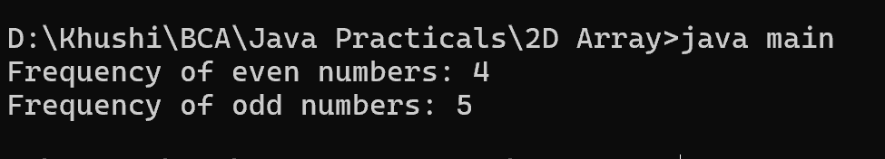

8. Program to find the frequency of odd & even numbers in the given matrix
class main {
public static void main(String[] args) {
int[][] matrix = {
{1, 2, 3},
{4, 5, 6},
{7, 8, 9}
};
int evenCount = 0;
int oddCount = 0;
for (int i = 0; i < matrix.length; i++) {
for (int j = 0; j < matrix[i].length; j++) {
if (matrix[i][j] % 2 == 0) {
evenCount++;
} else {
oddCount++;
}
}
}
System.out.println("Frequency of even numbers: " + evenCount);
System.out.println("Frequency of odd numbers: " + oddCount);
}
}
